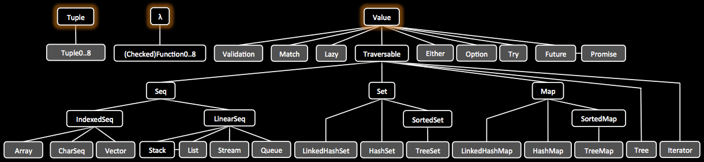

Core
Javaslang comes along with well designed representations of some of the most basic types which apparently are missing or rudimentary in Java, Tuple and λ.
Tuples
Java is missing a general notion of tuples. Tuple fills this gap.
// (Java, 8)
Tuple2<String, Integer> java8 = Tuple.of("Java", 8);
// (Javaslang, 2)
Tuple2<String, Integer> guessWhat = java8.map(
s -> s + "slang",
i -> i / 4
);
// and yes, java8 is still (Java, 8)
Functions
Functional programming is all about values and transformation of values using functions. Some basic examples are:
// sum.apply(1, 3) = 4
Function2<Integer, Integer, Integer> sum = (a, b) -> a + b;
// add2.apply(1) = 3
Function1<Integer, Integer> add2 = sum.curried().apply(2);
In fact λ is a functional interface on steroids times 10.
// computes the hash code of an object
Function1<Object, Integer> hash = Object::hashCode;
// computes the hash once, then reads from cache
Function<Object, Integer> hashCache =
Function1.of(Object::hashCode).memoized();
// ciao type erasure, hi Integer.class!
Class<?> returnType = hash.getType().returnType();
Checked functions are indispensable when dealing with exceptions in a functional way.
// may throw when called
Try.CheckedRunnable performIO = () -> { ... };
// handling failure in a functional way
Try.run(performIO).onFailure(...);
Values
In a functional setting we see a value as a kind of normal form, it cannot be further evaluated. In Java we express this by making the state of an object final and call it immutable.
Javaslang's functional Value abstracts over immutable objects. Efficient write operations are added by sharing immutable memory between instances. What we get is thread-safety for free!
// future *value*, result of an async calculation
Future<T> future = Future.of(...);
// lazy *value*, evaluated once
Lazy<T> lazy = Lazy.of(...);
// optional *value*, no more nulls
Option<T> option = Option.of(...);
// *value* of a possibly failing computation
Try<T> tryy = Try.of(...);
// a list of *values*
List<T> list = List.of(...);
// all of the above (here: value) obey:
String s = value.map(Object::toString).getOrElse("nothing");
In Javaslang, all is built upon these three basic building blocks, tuples, functions and values. To accomplish seamless interoperability with Java, Value is Iterable and provides various conversion methods back and forth from Javaslang to Java.

Collections
With Javaslang there has been put much effort into designing an all-new collection library for Java which meets the requirements of functional programming, namely immutability.
Java's Stream lifts a computation to a different layer and links to a specific collection in another explicit step. Whith Javaslang we don't need all this additional boilerplate.
The new collections are based on java.lang.Iterable, so they leverage the sugared iteration style.
// 1000 random numbers
for (double random : Stream.gen(Math::random).take(1000)) {
...
}
TraversableOnce has a huge amount of useful functions to operate on the collection. Its API is similar to java.util.stream.Stream but more mature.
List
Javaslang's List is an immutable linked list. Mutations create new instances. Most operations are performed in linear time. Consequent operations are executed one by one.
Java 8
Arrays.asList(1, 2, 3).stream().reduce((i, j) -> i + j);
IntStream.of(1, 2, 3).sum();
Javaslang
// javaslang.collection.List
List.of(1, 2, 3).sum();
Stream
The javaslang.collection.Stream implementation is a lazy linked list. Values are computed only when needed. Because of its laziness, most operations are performed in constant time. Operations are intermediate in general and executed in a single pass.
The stunning thing about streams is that we can use them to represent sequences that are (theoretically) infinitely long.
// 2, 4, 6, ...
Stream.from(1).filter(i -> i % 2 == 0);
Pattern Matching
Javaslang's pattern matching feature goes far beyond Java's switch.
Stream.of(0, 1, 2, 3, 13, 14, null, -1)
.peek(n -> out.print(format("%d -> ", n)))
.map(Match.as(Object.class) // Match function (with apply(Object))
.when(Objects::isNull).then("!")
.whenIs(0).then("zero")
.whenIsIn(1, 13, 14).then(i -> "first digit 1: " + i)
.whenType(Double.class).then(d -> "Found a double: " + d)
.whenApplicable((Number num) -> "number: " + num).thenApply()
.otherwise(() -> "no match"))
.map(Object::toString)
.forEach(out::println);
out.flush(); // Avoid mixing sout and serr
// Match monad (with map(), flatMap(), get(), orElse(), orElseGet(), orElseThrow(), etc.)
for (String s : Match.of(0)
.whenType(Number.class).then(Object::toString)
.otherwise("unknown")
.map(String::toUpperCase)) {
out.println(s);
}
Javaslang allows to match more special objects by more general cases:
// Match as Value
Match.of(Option.some(1))
.whenApplicable((Option<Integer> i) -> true).thenApply()
.get(); // = true
Match.of(Option.some(1))
.whenType(Option.class).then(true)
.get(); // = true
// Match as Function
Match.whenApplicable((Option<Integer> i) -> true).thenApply()
.apply(Option.some(1)); // = true
Match.whenType(Option.class).then(true)
.apply(Option.some(1)); // = true
The opposite is also possible, to match more general objects by more special cases:
// Match as Value
Match.of(Option.of(1))
.whenIs(Option.some(1)).then(true)
.get(); // = true
// Match as Function
Match.whenIs(Option.some(1)).then(true)
.apply(Option.of(1)); // = true
Failure Handling
The Try monad aims to ease exception handling. It represents the result state of a computation which may be a Success or a Failure.
Java 8
// cannot be final
A result = other;
try {
result = bunchOfWork();
} catch(Exception_1 e) {
...
} catch(Exception_2 e) {
...
} catch(Exception_n e) {
...
}
Javaslang
// no need to handle exceptions
Try.of(() -> bunchOfWork()).getOrElse(other);
A result = Try.of(this::bunchOfWork)
.recover(x -> Match.of(x)
.whenType(Exception_1.class).then(...)
.whenType(Exception_2.class).then(...)
.whenType(Exception_n.class).then(...)
.get())
.getOrElse(other);
Similar to collections it has the functions map() and flatMap() to further process results.
Property checking
Property checking (also known as property testing) is a truly powerful way to test properties of our code in a functional way. It is based on arbitrarily generated random data, which is passed to a user defined check function.
Arbitrary<Integer> ints = Arbitrary.integer();
// square(int) >= 0: OK, passed 1000 tests.
Property.def("square(int) >= 0")
.forAll(ints)
.suchThat(i -> i * i >= 0)
.check()
.assertIsSatisfied();
Generators of complex data structures are composed of simple generators.
Validation Control
Validation is an applicative functor, and facilitates accumulating errors. When trying to compose Monads,
the combination process will short circuit at the first encountered error. But 'Validation' will
continue processing the combining functions, accumulating all errors. This is especially useful
when doing validation of multiple fields, say a web form, and you want to know all errors encountered,
instead of one at a time.
Example: We get the fields 'name' and 'age' from a web form and want to create either a valid
Person instance, or return the list of validation errors.
Validation Example
PersonValidator personValidator = new PersonValidator();
// Valid(Person(John Doe, 30))
Validation<List<String>, Person> result = personValidator.validatePerson("John Doe", 30);
// Invalid(List(Name contains invalid characters: '!4?', Age must be greater than 0))
Validation<List<String>, Person> result = personValidator.validatePerson("John? Doe!4", -1);
Person Validator Example
public class PersonValidator {
private static final String VALID_NAME_CHARS = "[a-zA-Z ]";
private static final int MIN_AGE = 0;
public Validation<List<String>, Person> validatePerson(String name, int age) {
return Validation.combine(validateName(name), validateAge(age)).ap(Person::new);
}
private Validation<String, String> validateName(String name) {
return CharSeq.of(name).replaceAll(VALID_NAME_CHARS, "").transform(seq -> seq.isEmpty()
? Validation.valid(name)
: Validation.invalid("Name contains invalid characters: '" + seq.distinct().sort() + "'"));
}
private Validation<String, Integer> validateAge(int age) {
return (age < MIN_AGE)
? Validation.invalid("Age must be greater than " + MIN_AGE)
: Validation.valid(age);
}
}
Person Example
public class Person {
public final String name;
public final int age;
public Person(String name, int age) {
this.name = name;
this.age = age;
}
@Override
public String toString() {
return "Person(" + name + ", " + age + ")";
}
}
To be continued...
Javaslang has more useful data types not documented here, yet. The Option type is good for null-safe programming. It is a replacement for java.util.Optional. Either is a disjoint union type and there much more...